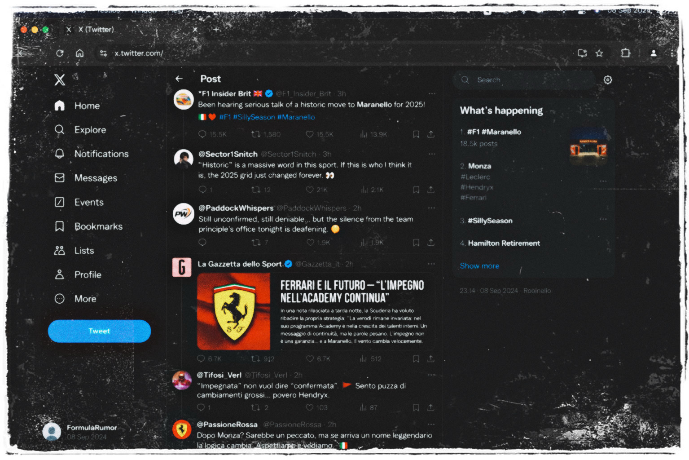
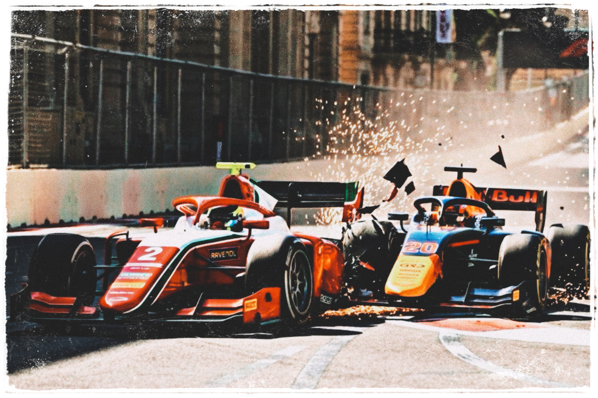
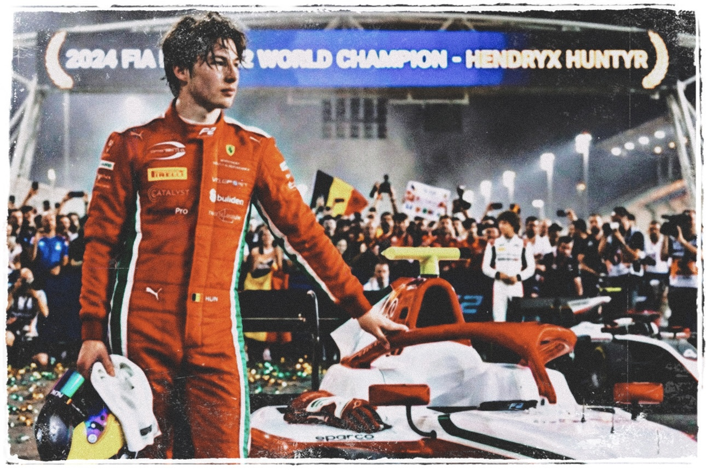
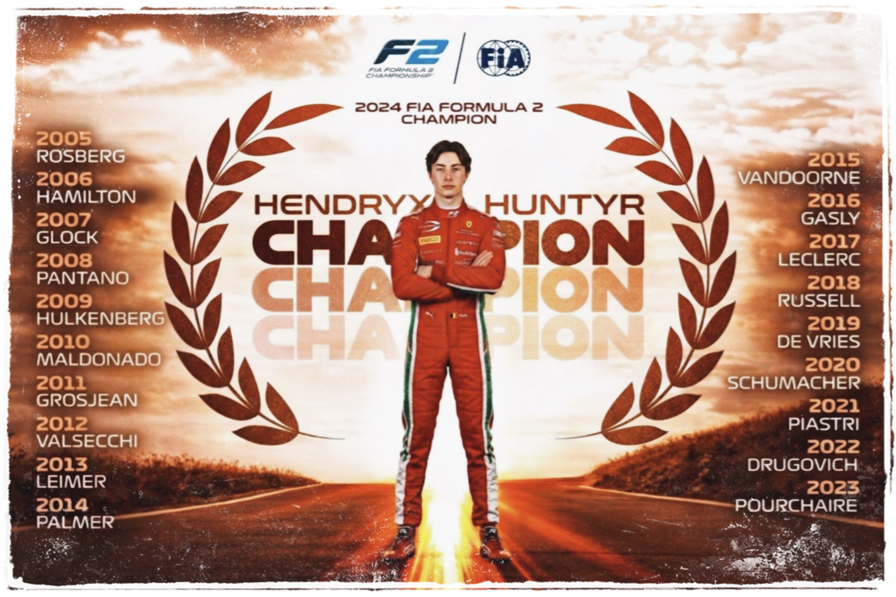

Chapter 5
The Quiet Champion
Maranello: whispers of a legacy acquisition
Monza had felt eternal.
But Imola was a ghost that refused to leave...
A few days after the crash, the paddock moved on.
It had to. The circus doesn't stop for scars.
But in Maranello, the air stayed heavy.
In the windowless rooms,
The DNF was replayed in high-definition loops.
Hendryx's soul was reduced to telemetry.
Every throttle blip at Rivazza was a data point against him.
Radio tone analyzed for a crack in the armor.
A clinical justification for the seismic shift
already happening in the boardroom.
In the media, they called it "inexperience."
A lesson, a necessary tax on speed...
But in the hushed, espresso-scented offices of the Scuderia,
the conversation was different..
Not angry.
Just... expansive.
Ferrari had always been a cathedral of ambition.
And cathedrals are never built for one saint alone.
Between the muted glow of the Prancing Horse
and the click of expensive pens,
a phrase began to haunt the hallways:
"Legacy acquisition."
It wasn't a formal plan.
It was a haunting.
The kind of rumor that drifts through the vents
for a week before setting the world on fire...
No one in the paddock paid attention.
Hendryx certainly didn't.
A multi-time F1 World Champion
whose contract was nearing its twilight.
A driver who transcended statistics.
A move that would shake the sport.
The name was not spoken loudly yet.
It didn't need to be.
And still, no reason for
the nineteen-year-old junior championship leader
to think any of it concerned him.
It was still only smoke.
And in Formula 1, smoke either drifts away,
or signals something already burning...
By the time Monaco came and went,
the whispers had gained shape.
Not confirmation.
Not even sources.
Just murmurs from the press about,
"a seismic driver movement in the works."
Italian outlets dismissed it.
Too expensive.
Too theatrical.
Too unnecessary.
After all, Ferrari already had their future.
He was winning.
He was precise.
He was theirs.
And he was too busy brushing
Monaco's walls without blinking.
Barcelona silenced critics.
Spielberg silenced rivals.
Silverstone silenced comparisons.
Each victory made the idea of replacing him seem absurd.
And yet...
The conversations did not stop.
They grew quieter... more deliberate.
Then came Monza.
Religion.
Scarlet rivers.
And as Hendryx lifted the trophy beneath
a sky choked with red smoke, somewhere else,
a different kind of celebration was beginning.
A British journalist posted a single line on social media:

"Been hearing serious talk of a historic move
to Maranello for 2025!"
No names.
But this time, the comments filled in the blanks.
The algorithm did the rest.
They appeared cautiously at first.
Then repeatedly.
Then confidently.
Still unconfirmed.
Still deniable.
But no longer harmless.
The Italian press pivoted subtly:
"Ferrari remains committed to its Academy programme."
The wording was careful.
Commitment was not the same as guarantee.
Hendryx did not notice the shift.
Why would he?
He had just won Monza.
He had just been told it wouldn't be his last time there.
He believed that.
Completely...
Baku: survival and precision
The paddock packed up for Baku
under a sky that looked deceptively calm.
The championship was nearly mathematical.
The narrative was settled.
But somewhere between the freight flights
and the hotel lobbies,
the whispers stopped being hypothetical.
Contracts were drafted.
Timelines discussed.
Calendars aligned.
The move was no longer an idea.
It was becoming logistics.
In Azerbaijan, the walls are close.
The straights are long.
And the consequences of misjudgment are immediate.
The perfect place for something unseen
to begin drawing a line he could not yet see.
And Hendryx, still dressed in red and white,
still chasing tenths with surgical indifference,
had no idea that the ground beneath him
was already shifting.
But Baku did not care about narratives.
It did not care about any margins.
It did not care about inevitability.
The circuit cut through the city like a blade.
Glass towers on one side, ancient stone on the other,
and eighteen corners that punished arrogance
without any warnings.
The Sprint unfolded the way
it always seemed to for him now.
Clean.
Measured.
Controlled.
From the launch, he placed the car
exactly where it needed to be,
slipping into Turn 1 without drama,
managing the DRS trains with the patience
of someone who had studied the track like a blueprint.
When the Safety Car compressed the field, he did not panic.
When the Invicta of Gabriel Bortoleto
tried to pressure him into Turn 3,
Hendryx left just enough space
to make the move look possible.
Then closed the door at exit with his quiet precision.
No fireworks.
No desperate lunges.
Just inevitability.
He crossed the line first.
Again...
The radio crackled with restrained satisfaction.
"P1, Hendryx!! That's another one."
"Copy," he replied, calm as ever.
The championship math tilted further in his favour.
But Baku rarely allows the same script twice.
Sunday already felt different from the formation lap.
The wind off the Caspian Sea carried
the scent of salt and impending chaos..
Dust gathered in the braking zones like a trap.
Grip felt inconsistent...
Like the asphalt was thinking about betraying someone.
From lights out, the Feature race was
a calculus of risk and consequence.
Slipstream trains stretched down the main straight,
four cars wide into Turn 1,
carbon brushing carbon,
mirrors folding like fragile promises.
Hendryx led early.
The Campos of Isack Hadjar stalked him behind.
The Frenchman had been aggressive all weekend,
his steering inputs sharper, his patience thinner.
Lap after lap, the gap never grew beyond a second.
Through castle section, the two cars
skimmed the walls in synchronised defiance.
Out of Turn 2, they raced toward the braking zone,
rear tyres dancing under DRS.
Into Turn 16 on Lap 13,
Hadjar decided he had waited long enough.
He launched a prayer from much further back
than logic suggested, a desperate dive down the inside.
He braked deep... too deep.
Hendryx had already committed to the apex,
leaving just enough racing room,
precise and predictable as always.
But the Campos couldn't hold the tight line.
It washed outward, the nose of his car
hunting for the gap that wasn't there.

The impact was surgical.
Hadjar's front wing pierced
directly into Hendryx's sidepod.
The sound was a sickening, metallic crack,
like a rifle shot echoing against
the ancient stone walls of the old city.
Carbon fibre exploded into jagged shards.
A massive fan of orange sparks sprayed from the chassis
as titanium ground against the street.
The Campos' suspension folded like origami.
The wheel snapping back as the car speared
toward the outside runoff in a plume of tire smoke.
The Prema twitched violently under the impact.
For a heartbeat, it looked like Hendryx
was a passenger going into the wall with him.
Then, lightning.
A snap-correction.
A breath held.
He kept it straight.
"Damage report,"
His voice was a flatline.
No adrenaline.
No panic.
"Your left sidepod's hit... temps rising.
We're seeing significant aero loss.
You'll need to manage, Hendryx.
Head down..."
He didn't argue.
He adjusted the brake bias with the gloved thumb.
Short-shifted on the exit.
Lifted earlier into heavy zones.
The entire left side of the car looked wounded,
bodywork torn, cooling vents jagged,
airflow compromised.
On the straights, rivals closed in faster now.
The car no longer cut cleanly through the air.
Into Turn 7, he defended once.
Firm.
Legal.
Absolute.
But the pace was gone.
One by one, the leaders reshuffled.
The Invicta powered past him on the main straight.
DRS, clean, inevitable
P1 became P2.
The ART followed a lap later,
using the wounded airflow like an open invitation,
P2 became P3.
Then P4...
Each overtake measured,
each decision calculated.
He did not fight beyond reason.
He did not gamble.
He remembered what pride had cost him once before.
With six laps remaining, the engineer's voice returned.
"Temps are critical but stable... bring it home."
He performed a twenty-lap surgery on a dying machine
to save a championship that didn't even know
it was being hunted.
When the chequered flag fell, he crossed the line in fourth.
Not triumphant. Not defeated.
Salvaged...
Into the pitlane, the car hissed and clicked as it cooled,
the left side scarred and uneven.
Isack Hadjar was already out.
Helmet off.
Arms animated.
Speaking to anyone who would listen.
Hendryx stepped from the cockpit slowly,
glanced once at the torn bodywork,
then at the timing screen.
P4.
+12 Points.
Still comfortably leading.
He removed his gloves.
No theatrics.
No gestures.
Just the quiet calculation of a driver
who understood that championships
were not won only in the moments of dominance,
but in the days you refused to let chaos take everything.
Baku surely had tried...
He had given it only three positions.
Lusail: the quiet champion
The paddock moved from the chaos of the ancient city
to the stillness of the desert.
Lusail did not have walls.
It did not punish impatience with concrete.
Instead, it punished something far more subtle.
The precision.
The circuit unfolded across the sand like a ribbon of light,
long-radius corners, relentless lateral load,
a track that asked drivers to
trust the car for seconds at a time.
And the mathematics of the championship
had finally become impossible to ignore.
With the Baku recovery,
Hendryx arrived in Qatar carrying
a margin that bordered on inevitability.
The title was no longer a question of "when?"
Only one thing remained.
"Is it today?"
The Sprint offered the earliest opportunity.
Twenty-three laps...
Enough points on the table to close the championship
before Sunday had begun.
From lights out, Lusail felt very different from Baku.
The fight was there.
But the desperation was not.
Cars fanned out into Turn 1.
Tyres biting at the dusty outer line,
engines screaming against the desert air.
Hendryx launched cleanly but not perfectly.
Lap 7, Turn 4, Antonelli's ART
slipped through on the inside,
braking late enough to claim the apex.
Hendryx did not force the counterattack.
Through the long sweep of Turn 12,
the Prema settled into rhythm,
rear tyres loaded under sustained G-force,
the car balanced with the calm precision
that had defined his season.
Second place.
Behind him, the pack shuffled constantly.
DRS attempts came and went.
Drivers lunged where they normally would not.
The championship tension existed for everyone else.
Not for him.
On Lap 11,
His teammate, Oliver Bearman
attempted a dive into Turn 6.
Late... Optimistic.
Hendryx saw it before the braking boards.
He left the space,
rotated the car,
and exited faster,
the move dissolving before it ever fully formed.
Measured.
Controlled.
Unnecessary risks avoided.
Exactly what the mathematics demanded.
With two laps remaining,
the gap behind had stabilised.
The race leader remained just out of reach,
a few tenths beyond the DRS threshold.
Hendryx did not chase.
Second place was enough.
More than enough.
The engineer's voice came through the radio
as the final lap began.
"Okay Hendryx, this is the last lap."
A pause, then,
"Finish here... the title is yours."
The reply came without a millisecond of hesitation.
"Understood."
Pulse unchanged.
No ego.
No disbelief.
Just another braking point into Turn 1.
Another apex.
Another exit.
He crossed the line in second.
flickered, turning his name into history.
The radio erupted...
Cheers.
Laughter.
Relief.
"SÌÌÌ, THAT IS THE CHAMPIONSHIP!!
FORZA HENDRYX HUNTYR, BRAVO.
YOU ARE THE WORLD CHAMPION!!"
Inside the cockpit, there was only
the sound of his own breathing.
"Grazie mille, ragazzi..."
Three words.
Steady.
Almost quiet.
The Prema team arrived at the car
before he could climb out in Parc Fermé,
Mechanics wrapped him in embraces,
Engineers clapped him on the helmet,
Someone shouted,
"You've done it!!"
But the noise felt miles away...

Hendryx walked back and stood tall
beside the Prema, one hand resting
lightly on the Halo, a knight at rest.
The carbon fiber was still ticking as it cooled in the air,
carrying the literal scars of the battle.
His gaze was fixed past the floodlights,
out into the black void of the desert.
The massive gantry above him
glowed with a cold, digital finality,
etching his name into the night sky:
"2024 FIA FORMULA 2 WORLD CHAMPION
- HENDRYX HUNTYR"
The words didn't feel like victory.
They felt like a heavy, permanent anchor.
He was no longer just a driver chasing a ghost.
He had become a fixed point in the sport's orbit.
The high-decibel chaos of the season
had finally distilled into this.
A singular, quiet fact that the world
would now have to carry...
No celebration.
Just confirmation.
The season was over.
The dream was achieved.

Hendryx Huntyr was not just a name
on a timing screen anymore.
He was a statistic in a lineage of giants.
His was now bound to the same tarmac
as the legends who had used this podium
as a springboard to immortality.
The history of the sport had just opened its ledger,
and in ink that would never fade,
it had written his name alongside the greats.
But while the world memorized his name,
the click of expensive pens was busy signing another.
And yet, somewhere in the windowless rooms of Italy,
history was already being rewritten.
The contract for someone else was
already waiting for the ink to dry...